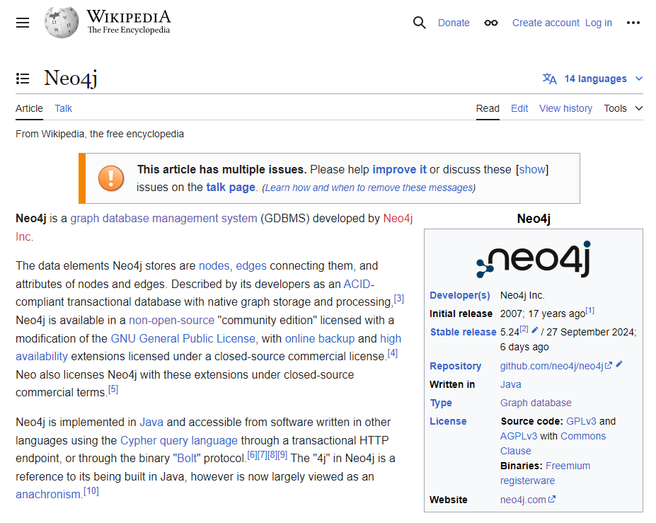

How to Construct a Knowledge Graph with an LLM
In this lesson, you will learn the process of constructing a knowledge graph using a Language Model (LLM).
The construction process
Typically, you would follow these steps to construct a knowledge graph from unstructured text using an LLM:
-
Gather the data
-
Chunk the data
-
Vectorize the data
-
Pass the data to an LLM to extract nodes and relationships
-
Use the output to generate the graph
Gather your data sources
The first step is to gather your unstructured data. The data can be in the form of text documents, PDFs, publicly available data, or any other source of information.
Depending on the format, you may need to reformat the data into a format (typically text) that the LLM can process.
The data sources should contain the information you want to include in your knowledge graph.
Chunk the data
The next step is to break down the data into right-sized parts. This process is known as chunking.
The size of the chunks depends on the LLM you are using, the complexity of the data, and what you want to extract from the data.
You may not need to chunk the data if the LLM can process the entire document at once and it fits your requirements.
Vectorize the data
Depending on your requirements for querying and searching the data, you may need to create vector embeddings. You can use any embedding model to create embeddings for each data chunk, but the same model must be used for all embeddings.
Placing these vectors into a Vector index allows you to perform semantic searches, similarity searches, and clustering on the data.
|
Tip
|
Chunking, Vectors, and Similarity Search
You can learn more about how to chunk documents, vectors, similarity search, and embeddings in the GraphAcademy course Introduction to Vector Indexes and Unstructured Data.
|
Extract nodes and relationships
The next step is to pass the unstructured text data to the LLM to extract the nodes and relationships.
You should provide a suitable prompt that will instruct the LLM to:
-
Identify the entities in the text.
-
Extract the relationships between the entities.
-
Format the output so you can use it to generate the graph, for example, as JSON or another structured format.
Optionally, you may also provide additional context or constraints for the extraction, such as the type of entities or relationships you are interested in extracting.
Generate the graph
Finally, you can use the output from the LLM to generate the graph by creating the nodes and relationships within Neo4j.
The entity and relationship types would become labels and relationship types in the graph. The names would be the node and relationship identifiers.
Example
If you wanted to construct a knowledge graph based on the Neo4j Wikipedia page, you would:
-
Gather the text from the page.
Neo4j is a graph database management system (GDBMS) developed by Neo4j Inc.
The data elements Neo4j stores are nodes, edges connecting them and attributes of nodes and edges. Described by its developers as an ACID-compliant transactional database with native graph storage and processing...
-
Split the text into chunks.
Neo4j is a graph database management system (GDBMS) developed by Neo4j Inc.
The data elements Neo4j stores are nodes, edges connecting them and attributes of nodes and edges.
Described by its developers as an ACID-compliant transactional database with native graph storage and processing...
-
Generate embeddings and vectors for each chunk.
[0.21972137987, 0.12345678901, 0.98765432109, ...]
[0.34567890123, 0.23456789012, 0.87654321098, ...]
[0.45678901234, 0.34567890123, 0.76543210987, ...]
-
Extract the entities and relationships using an LLM.
Send the text to the LLM with an appropriate prompt, for example:
Your task is to identify the entities and relations requested with the user prompt from a given text. You must generate the output in a JSON format containing a list with JSON objects.
Text: {text}Parse the entities and relationships output by the LLM.
[ { "text": ( "Neo4j is a graph database management system (GDBMS) developed by Neo4j Inc." ), "head": "Neo4j", "head_type": "GraphDatabase", "relation": "DEVELOPED_BY", "tail": "Neo4j Inc", "tail_type": "Company", }, { "text": ( "Neo4j is implemented in Java" ), "head": "Neo4j", "head_type": "Graph Database", "relation": "IMPLEMENTED_IN", "tail": "Java", "tail_type": "ProgrammingLanguage", }, ... ] -
Generate the graph.
Use the data to construct the graph in Neo4j by creating nodes and relationships based on the entities and relationships extracted by the LLM.
MERGE (neo4jInc:Company {id: 'Neo4j Inc'}) MERGE (neo4j:GraphDatabase {id: 'Neo4j'}) MERGE (java:ProgrammingLanguage {id: 'Java'}) MERGE (neo4j)-[:DEVELOPED_BY]->(neo4jInc) MERGE (neo4j)-[:IMPLEMENTED_IN]->(java)
Check your understanding
1. Knowledge graph construction steps
Which of the following steps could be considered optional?
-
❏ Gather your data sources
-
✓ Chunk the data
-
✓ Vectorize the data
-
❏ Pass the data to an LLM to extract nodes and relationships
-
❏ Use the output to generate the graph
Show hint
|
Tip
|
Hint
The essential parts of the process are obtaining the data to pass to the LLM and using the output to generate the graph. |
Show solution
|
Tip
|
Solution
The optional steps are:
It may not be necessary to chunk the data or vectorize it depending on the LLM you are using, the complexity of the data, and your requirements. |
Lesson Summary
In this lesson, you learned about how to construct a knowledge graph.
In the next lesson, you will use Neo4j’s LLM Graph Builder to experiment with the construction process.